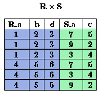
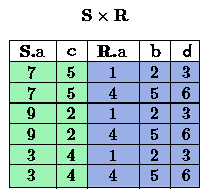
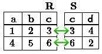
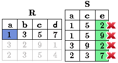
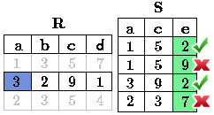

Algebra, en general, consiste de operadores y operandos atómicos, por ejemplo, en el álgebra de la aritmética, los operandos atómicos son variable como \(r\), y constantes como 15. Los operadores son los usuales en la aritmética:
- Suma,
- Resta,
- Multiplicación,
- División.
Cualquier álgebra nos permite construir expresiones mediante la aplicación de operadores a operandos atómicos y/o otras expresiones del álgebra. En general, los paréntesis son necesarios para agrupar operadores y sus operandos, por ejemplo, en aritmética tenemos expresiones tales como \((x + y) * z\) ó \(((x + 7)/(y - 3)) + x\).
El Álgebra Relacional es otro ejemplo del álgebra. Sus operandos atómicos son:
- Variables que representan relaciones.
- Constantes que son relaciones finitas.
Nota
En algunos textos de álgebra relacional o SQL, una relación es sinónimo de una tabla.
Como mencionamos, en el álgebra relacional clásica, todos los operandos y sus resultados de expresiones son conjuntos. Los operadores del álgebra relacional tradicional se divide en cuatro grandes categorías:
- Los conjuntos habituales de operaciones unión, intersección, y diferencia se aplica a las relaciones.
- Las operaciones que eliminan parte de una relación: selección elimina algunas filas (o tuplas), y proyección elimina algunas columnas.
- Las operaciones que combinan las tuplas de dos relaciones, como el producto cartesiano, que empareja las tuplas de dos relaciones en todas las maneras posibles y varios tipos de operadores unión, los cuales forman parejas de tuplas de dos relaciones selectivamente.
- Una operación llama “renombrar” que no afecta las tuplas de una relación, pero que cambia el esquema de relación, es decir, lo nombres de los atributos y/o los nombres de la relación misma.
Debemos por lo general referirnos a las expresiones del álgebra relacional como consultas. A pesar de que aún no tengan los símbolos necesarios para mostrar muchas de las expresiones del algebra relacional, se debería familiarizar con las operaciones de grupo (a); y por lo tanto reconocer: \(\text{R} \cup \text{S}\) como un ejemplo de una expresión de álgebra relacional. Donde \(\text{R}\) y \(\text{S}\) son operandos atómicos para relaciones, cuyos conjuntos de tuplas son desconocidas. Esta consulta pregunta por la unión de cualquiera tuplas que están en las relaciones nombradas \(\text{R}\) y \(\text{S}\).
Las tres operaciones más comunes en conjuntos son unión, intersección, y diferencia, que serán vistas en la lectura 4.
Nota
Resumiendo Álgebra Relacional se define como un conjunto de operaciones que se ejecutan sobre las relaciones (tablas) para obtener un resultado, el cual es otra relación.
Los operadores relacionales se utilizan para filtrar, cortar o combinar tablas.
Este operador se aplica a una relación \(\text{R}\) produciendo una nueva relación con un subconjunto de tuplas de \(\text{R}\). Las tuplas de la relación resultante son las que satisfacen una condición \(C\) sobre algún atributo de \(R\). Es decir selecciona filas (tuplas) de una tabla según un cierto criterio \(C\). El criterio \(C\) es una expresión condicional, similar a las declaraciones del tipo “if”, es “booleana” esto quiere decir que para cada tupla de \(\text{R}\) toma el valor Verdad(true) o Falso(false).
Valores de atributos con “NULL” no cumplirán ninguna condición.
Cada condición simple o cláusula C tiene el formato: <Atributo> <Comparador> <Atributo o Constante del Dominio>}. donde, el campo Comparador es un operador lógico, que pueden ser \(\{= , \geq , > , < , \neq , \leq \}\).
- \(=\) : símbolo de igual que.
- \(\neq\): significa no igual a, en algunos libros este símbolo esta representado por !=.
- \(\geq\): mayor que o igual a.
- \(>\): mayor que.
- \(<\): menor que.
- \(\leq\): menor que o igual a.
Los operadores lógicos que se utilizan, también llamados operadores relacionales, nos proporcionan un resultado a partir de que se cumpla o no una cierta condición. Son símbolos que se usan para comparar dos valores. Si el resultado de la comparación es correcto la expresión considerada es verdadera, en caso contrario es falsa. Por ejemplo, 11>4 (once mayor que cuatro) es verdadera, se representa por el valor true del tipo básico boolean, en cambio, 11<4 (once menor que cuatro) es falsa se representa por el valor false.
Las cláusulas \(C\) pueden conectarse con otros operadores lógicos, que al igual que los anteriores que se usaban como comparador (entre atributos o atributo y constante), arrojan booleano (true o false) de resultado:
Notación en Álgebra Relacional
Para representar Select en álgebra relacional se utiliza la letra griega sigma \(\sigma\). Por lo tanto, si utilizamos la notación \(\sigma_{c} \ \boldsymbol{R}\) queremos decir que se aplica la condición \(C\) a cada tupla de \(\text{R}\). Si la condición es Verdad true, dicha tupla pertenecerá al resultado y si es Falsa false, dicha tupla no será seleccionada. El esquema de la relación resultante es el mismo esquema \(\text{R}\), se muestran los atributos en el mismo orden que se usan en la tabla \(\text{R}\).
Seleccionar las tuplas de la tabla \(\text{Ingenieros}\) que cumplan con tener una edad mayor a 30 años:
Respuesta
En la imagen se ve que selecciona solo las filas que cumplen con la condición que se pedía (tener una edad mayor a 30 años), la tupla de “Josefa” queda fuera de la selección por no cumplir la condición (pues 25 < 30). De esta forma la tabla queda:
Seleccionar de la tabla \(\text{Ingenieros}\) las personas que tienen más de 30 años y que lleven menos de 16 años trabajando:
Respuesta
Al tener el operador lógico AND se pide que cumplan dos condiciones simultáneamente. Primero que la edad sea mayor de 30 años, al igual que en el ejemplo anterior, la tupla de “Josefa” queda fuera de la selección. Luego de las tuplas que quedan se evalúa la segunda condición. En la imagen se aprecia, que solo se seleccionan las filas que no tengan X en alguna de las condiciones.
Así finalmente quedaría la tabla:
El operador Proyección se utiliza para producir una nueva relación desde \(\text{R}\). Esta nueva relación contiene sólo algunos de los atributos de \(\text{R}\), es decir, realiza la selección de algunas de las columnas de una tabla \(\text{R}\).
Notación en Álgebra Relacional
Project en Álgebra Relacional se representa por la letra griega pi:
El resultado es una relación seleccionando solo los atributos \(A_1,...,A_n\) de la relación \(\text{R}\). Si \(A_1,...,A_n\) no incluye una llave (o clave), podrían producirse tuplas repetidas en el resultado, las cuales serán eliminadas.
Escoger columnas de id y nombre de la tabla de \(\text{Ingenieros}\):
Respuesta
La tabla finalmente queda como:
Seleccionar id y nombre de los \(\text{Ingenieros}\) que tienen más de 30 años.
Respuesta
Se aprecia que las tuplas que no cumplan con la condición de selección quedan fuera del resultado, luego se realiza un Project sobre las filas del resultado, separando solo las columnas que contienen los atributos id y nombre. Finalmente la tabla queda de la siguiente manera:
En teoría de conjuntos, el producto cartesiano de dos conjuntos es una operación que resulta en otro conjunto cuyos elementos son todos los pares ordenados que pueden formarse tomando el primer elemento del par del primer conjunto, y el segundo elemento del segundo conjunto. En el Álgebra Relacional se mantiene esta idea con la diferencia que \(\text{R}\) y \(\text{S}\) son relaciones, entonces los miembros de \(\text{R}\) y \(\text{S}\) son tuplas, que generalmente consisten de más de un componente, cuyo resultado de la vinculación de una tupla de \(\text{R}\) con una tupla de \(\text{S}\) es una tupla más larga, con un componente para cada uno de los componentes de las tuplas constituyentes. Es decir Cross-product define una relación que es la concatenación de cada una de las filas de la relación \(\text{R}\) con cada una de las filas de la relación \(\text{S}\).
Notación en Álgebra Relacional
Para representar Cross-product en Álgebra Relacional se utiliza la siguiente terminología:
Por convención para la sentencia anterior, los componentes de \(\text{R}\) preceden a los componentes de \(\text{S}\) en el orden de atributos para el resultado, creando así una nueva relación con todas las combinaciones posibles de tuplas de \(\text{R}\) y \(\text{S}\). El número de tuplas de la nueva relación resultante es la multiplicación de la cantidad de tuplas de \(\text{R}\) por la cantidad de tuplas que tenga \(\text{S}\) (producto de ambos). Si \(\text{R}\) y \(\text{S}\) tienen algunos atributos en común, entonces se debe inventar nuevos nombres para al menos uno de cada par de atributos idénticos. Para eliminar la ambigüedad de un atributo a, que se encuentra en \(\text{R}\) y \(\text{S}\), se usa \(R.a\) para el atributo de \(\text{R}\) y \(S.a\) para el atributo de \(\text{S}\).
Cabe mencionar que por notación que: \(\text{R} \times \text{S} \neq \text{S} \times \text{R}\)
Con las tablas dadas realice el Cross-product de \(\text{R}\) con \(\text{S}\):
Con azul se resaltan las tuplas que provienen de \(\text{R}\) que preseden y se mezclan con las de \(\text{S}\) resaltadas en verde.
Con las tablas dadas realice el Cross-product de \(\text{S}\) con \(\text{R}\):
Dada las siguientes tablas:
Escriba la tabla resultante al realizar la siguiente operación:
Respuesta
Este operador se utiliza cuando se tiene la necesidad de unir relaciones vinculando sólo las tuplas que coinciden de alguna manera. NaturalJoin une sólo los pares de tuplas de \(\text{R}\) y \(\text{S}\) que sean comunes. Más precisamente una tupla r de \(\text{R}\) y una tupla s de \(\text{S}\) se emparejan correctamente si y sólo si r y s coinciden en cada uno de los valores de los atributos comunes, el resultado de la vinculación es una tupla, llamada joined tuple. Entonces, al realizar NaturalJoin se obtiene una relación con los atributos de ambas relaciones y se obtiene combinando las tuplas de ambas relaciones que tengan el mismo valor en los atributos comunes.
Notación en Álgebra Relacional
Para denotar NaturalJoin se utiliza la siguiente simbología: \(\text{R} \rhd \hspace{-0.1cm} \lhd \text{S}\).
Equivalencia con operadores básicos
NaturalJoin puede ser escrito en términos de algunos operadores ya vistos, la equivalencia es la siguiente:
Método
- Se realiza el producto cartesiano \(\text{R} \times \text{S}\) .
- Se seleccionan aquellas filas del producto cartesiano para las que los atributos comunes tengan el mismo valor.
- Se elimina del resultado una ocurrencia (columna) de cada uno de los atributos comunes.
Con las tablas dadas realice el NaturalJoin de \(\text{R}\) y \(\text{S}\):
El atributo que tienen en común \(\text{R}\) y \(\text{S}\) es el atributo c, entonces las tuplas se unen donde c tiene el mismo valor en \(\text{R}\) y \(\text{S}\)
Realizar NaturalJoin a las siguientes tablas:
Respuesta
Define una relación que contiene las tuplas que satisfacen el predicado \(C\) en el Cross-Product de \(\text{R} \times \text{S}\). Conecta relaciones cuando los valores de determinadas columnas tienen una interrelación específica. La condición \(C\) es de la forma R.ai <operador_de_comparación> S.bi, esta condición es del mismo tipo que se utiliza Select . El predicado no tiene por que definirse sobre atributos comunes. El término “join” suele referirse a ThetaJoin.
Notación en Álgebra Relacional
La notación de ThetaJoin es el mismo símbolo que se utiliza para NaturalJoin, la diferencia radica en que ThetaJoin lleva el predicado \(C\):
C = <Atributo> <Comparador> <Atributo o Constante del Dominio> Donde: <Comparador> \(\in {\{=,\geq,>,<, \neq,\leq \}}\)
Equivalencia con operadores básicos
Al igual NaturalJoin, ThetaJoin puede ser escrito en función de los operadores vistos anteriormente:
Método
Escriba la tabla resultante al realizar la siguiente operación:
Respuesta
Se compara el atributo a de la primera fila de \(R\) con cada uno de los valores del atributo e de la tabla \(S\). En este caso ninguna de las comparaciones devuelve el valor verdadero (true).
Luego se compara el atributo a de la segunda fila de \(\text{R}\) con cada uno de los valores del atributo e de la tabla \(\text{S}\). En este caso 2 comparaciones devuelven el valor verdadero (true), por lo que en la relación de resultado quedará la segunda fila de \(\text{R}\) mezclada con la primera y tercera fila de \(\text{S}\).

De igual forma ahora se compara el valor de a de la tercera tupla de \(R\), nuevamente 2 tuplas de \(S\) cumplen con la condición.
Con el esquema conceptual siguiente, hallar los nombres de los directores de cada departamento:
\(\text{Dpto} (\underline{\text{numDpto}} \text{, nombre, nIFDirector, fechaInicio})\)
\(\text{Empleado} (\underline{\text{nIF}} \text{, nombre, direccion, salario, dpto, nIFSupervisor})\)
Respuesta
Considere la siguiente base de datos:
- \(\text{Persona}(\underline{\text{nombre}} \text{, edad, genero})\) : nombre es la clave.
- \(\text{Frecuenta}(\underline{\text{nombre, pizzeria}})\) : (nombre, pizzeria) es la clave.
- \(\text{Come}(\underline{\text{nombre, pizza}})\) : (name, pizza) es la clave.
- \(\text{Sirve}(\underline{\text{pizzeria, pizza}}\text{, precio})\): (pizzeria, pizza) es la clave.
Escribir expresiones en álgebra relacional para las siguientes dos preguntas:
- Seleccionar a las personas que comen pizzas con extra queso.
- Seleccionar a las personas que comen pizzas con extra queso y frecuentan la pizzería X.